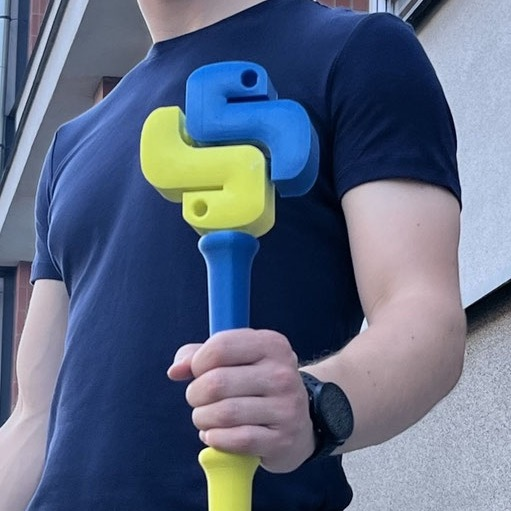

Lightning, Emotion, and Learning
Lightning Talks

The lightning talks stunned me. I kept thinking it was time for me to leave, since they came at the end of each intense day, but like a forbidden snack, I kept staying for just one more. Ultra-short presentations with sudden shifts from the emotional, to the weird, to the hilarious. The Lightning Talks serve as a sampler of the community at large, incredibly diverse, incredibly joyful:
- Armin Ronacher, star developer whose tools have been used by every single person in the hall, moved us all: “Python gave me my life and this community made me who I am”, he said, paying tribute to those who had inducted him into the language.
- Then a medley:
- knitting as a binary pattern, whether knitting kittens or fractals;
- how to pronounce PyPI (it is Py, P, I, not PyPy, which is something else entirely);
- weird and wonderful Olympic mascots;
- building underwater, Python-driven robots;
- the thriving Python Community in Africa;
- riding Python-powered e-bikes from Switzerland to Prague (for the conference) and back;
- And an amazing teen (was he the youngest at the conference?) who set the audience abuzz with applause and hilarity as he showed off his school project: playing the buzzer on an Arduino.
TL;DR for Selected Talks
Here are my summaries of the extensive notes I took from talks I attended, with personal lessons and reactions. Any inaccuracies or errors are, of course, my own.
📦 Caching in Python (Akshita Gupta)
Wow, this was a masterclass in content and style. Akshita Gupta gets my award for "highest bandwidth" presentation: a deep dive into caching in Python with a fully visual set of slides, the most explained with the least words on screen.
AG took us on a journey through caching, from DNS caches in browsers, to the use of functools decorators, to distributed systems built on Redis and Memcached, to JobLib for parallel execution of data-intensive tasks. She layered on the patterns: starting with storing the results of function given a set of inputs; later, looking for the same inputs and retrieving the results; on a miss, computing and storing the new result. She covered setting policies on expiry, eviction, and refreshing of cached entries.
I came away keen to start experimenting with optimising some of my own code. And... am I tempted to try to improve my times in last December's Advent of Code? Baby steps: start with the more routine use of the functools.lru_cache and functools.cache decorators.
🌐 Democratizing Serverless AI Apps (Yuichiro Tachibana)
Yuichiro Tachibana converted a prosaic data processing script step by step into a serverless Streamlit AI app using Pyodide and Stlite, finally layering on transformers.js.py for sentiment analysis on the data set. The result: a fully client-side AI-enabled web app (HTML-only), that preserves privacy, enables easy sharing, and reduces cost.
I had a double-take towards the end of the talk, realising belatedly that YT (whitphx) is himself the developer of both stlite and transformers.js.py, the libraries he was so expertly yet playfully demonstrating. I shall definitely explore these.
📚 PyScript + EduBlocks (Josh Lowe)
Josh Lowe runs EduBlocks, a block-based Python learning site for schoolchildren. He demonstrated how he needs to achieve massive scale (300K monthly users and over a million projects) without incurring any server costs.
His secret: Josh uses PyScript. No backend infrastructure needed; everything happens on the client side.
I have to admit that I tried out PyScript too early after its release and I wasn't impressed. But Josh unveiled a totally different world of possibilities. Amazing! Maybe I won’t be writing another EduBlocks web app, but it would certainly be interesting to try adding PyScript to mini-apps hosted on “static” pages, such as on this blog. Watch this space.
🧠 Generative AI's Promises & Pitfalls (Keynote by Nerea Luis)
Nerea Luis' keynote covered GenAI’s rapid rise, shifting tech roles, and blurring lines of accountability: who can claim to have written the code when AI pair programmers are used? Who takes the blame when AI agents are in the loop?
Her key message to developers: cultivate adaptable AI habits, not tool dependency. Over the next five years, she said, expect significant, unforeseeable change, particularly in areas such as search, information analysis, service consumption, communication, and the development of digital products and projects.
She introduced us (or was that just me?) to two invaluable resources:
- the OWASP lists for new vulnerabilities (e.g., the OWASP Top 10 for LLM Applications 2025), and
- the AI CEO letters site for AI dreams at the head of large companies.
⚙️ Async Python Basics (Krzysztof Wilczyński & Mateusz Zaremba)
 KW and MZ used a clever metaphor for concurrency: they passed the Python-baton to each other as they took turns speaking. It stood for control flow, as Python shifts from executing to waiting. Loved it. Photo credit: Krzysztof Wilczyński & Mateusz Zaremba.
KW and MZ gave us fast, accessible introduction to Python concurrency: async/await, coroutines, the event loop, and asyncio.gather. They started with the standard library and delved deep into the logic and pitfalls of concurrency. Tools also mentioned: anyio, asyncer.
Finally, I felt I understood the concepts -- I had had threads, processes, and concurrency in a jumble in my mind, and I just avoided all of that. KW and MZ invited me in again, another neglected space to explore.
🐍 Python Performance “Snake Oil” (Sindre Nistad)
With tongue firmly in cheek and sheer virtuosity, Sindre delivered real speed gains in Python leveraging C, Rust, Numba, and others. He first introduced the original Mandelbrot set, plotted in asterisks on a dot matrix printer, then he went on to animate it, step by step, live, at high FPS, zooming rapidly down as far as Python's floating point numbers would allow him.
Sindre has a deadpan comedy style, funny and brilliant, with punchlines in Python. I even loved the snake oil pun for Python performance (geddit?). Not sure there was much Python code left on screen by the end, after all the C, Rust, and Numba took over. Nor that I will be able to emulate any of this any time soon. It was just astounding to watch. It felt like staring into a wind machine, as close to flying as possible.
🤖 Automating the Unloved Project (Sebastian Witowski)
Sebastian told us how he automated a side project (stock-trading signals) with Python, n8n, and Telegram bots. He had started the project to "scratch his own itch" while day-trading during the lockdowns. He discovered that he could package it for others to use, and some people subscribed.
However, he fell out of love with it. He stopped trading and no longer had any use for it. Customer support started taking too much of his time, with little income to show for it. So he automated himself out of it, handing over on-boarding, trial subscriptions, renewal information, and other repetitive tasks to a combination of scripts and n8n flow, with Telegram bots for when his intervention (approval, rejection, exceptions) was needed.
His key lessons to the audience: thinking of a side project? Don't buy a new house yet. And automate early, set boundaries, don’t confuse passive income with no effort, and plan your exit. Candid, and practical.
🛠️ Building & Deploying AI Agents in VS Code (Sharon Xu)
Sharon Xu used Microsoft’s AI Toolkit in VS Code to build and deploy an AI agent locally, live, in real time. She used GitHub Copilot to create both front and back ends, and deployed to the cloud. It took her less than 30 minutes, including a few minutes of projector glitch.
This talk made agents and MCP much more accessible and provided an elegant example of a basic but effective app at the end. SX made it look so effortless, as experts always do, I guess. Added to my list for exploring.